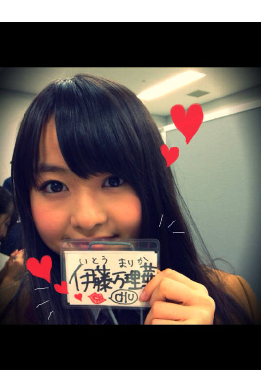

| 2011/12 11 Sun | 24回目*marika |
ベビたんですこんばんわ。
いつも読んでくださってる方、
初めて読んでくださった方、
コメントしてくださった方、
ありがとうございます!**
今日は東京モーターショーで握手会でした^^!!
沢山の方にお集りいただいて
めっちゃ感激でした!!
長い間待っていただいて
本当にありがとうございました!!
みなさんとお話できて本当によかったです*
私は青レーンでした=3
「ベビたん」
「ブログ読んでるよ」
って、沢山の方が言ってくださって
めちゃくちゃうれしかったです♡
ほめられたらめっちゃ照れてしまって
対応が悪くて反省しています...
ぎこちなくてすみませんでした~;;;;
プレゼントありがとうございました---!!!!!!!!
うれしいことばっかりやーもう!＊
握手できなかった方、残念です-。
でも、次のイベントで握手できる機会があれば
沢山お話ししましょう---☆☆

...........................
・何をやってる時にテンションが一番上がるの？
答えるの遅くなってしまってすみませんでした;(...
メンバーや仲良い友達と
はしゃいでる時が自分めっちゃ
テンション高山ってるって思います。
高山ってる時は
げらげら大笑いしてるんですよ笑
あと、
好きな所で1人で買い物してる時、
密かにテンション高山~~~!←
・焼き肉だとどこのお肉が好き？
タン♡
カルビ♡
・今一番食べたい鍋料理は何？
最近我が家では
豚と白菜のミルフィーユ鍋が流行りで!!
CMでもやってる**
レタス鍋も好きです。
(レタス一枚ずつしゃぶしゃぶして、
ミョウガ,ネギ,生姜のぽんずダレでたべるやつ)
キムチ鍋もだいすき-♡
こりゃんめぇです!!
ぜひ作ってみてください。
・写メって、待ち受けにしてもいい？
お気に入りが見つかったならぜひ!!
ありがとうございます＊!
自分の載せたのが待ち受けになるって
めっちゃうれしいですよ><
・ろってぃと撮った時に巻いてるマフラー
どこで買ったやつ？
かわいいですよね----♡
趣味合いますねぇ^^にやにや←
これママのおさがりのなんですよ-!
聞いたけど忘れたみたいで....
わかったら教えますね**
・ペット飼ってる？
昔ハムちゃん飼ってましたよ!!
２匹!!!
ラッキーちゃんとハッピーちゃん。
・まりりの周りには12/12生まれの子いる？
明日ですね＊...ってもうすぐや=3
ねねもそうやし.......
もう１人中学の頃の親友もです!!
2人や---＊。*+°
・画像はメール添付機能で載せられないの？
わかりません; ;
ごめんなさい!
パソコンでやってるんですけど
どうやってやるやろ.....
・モケケって何？
手の長いキャラクターです**
たぶん癒し系((笑
くわしくはモケケだいすき
せいらに聞いてください!!
...........................
あんな!!
今日も真洋と帰りご飯行ってん***!!
げらげら大笑いして
テンション高山やった♡
真洋とはいっつも笑い合ってるねん。
うふふふ
いひひひ...
うひひひ.....
てね笑
笑い合いすぎて
スタッフさんに気持ちわるいてゆわれてしもたな笑

またクリスマスのイベントで元気な姿を
みなさんにお見せします☆*
風邪に気ぃつけましょうね!!
明日も元気に頑張ろう***

LOVE
ベビたん*****bA by marika